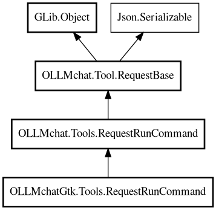

RequestRunCommand
Object Hierarchy:

Description:
public class RequestRunCommand :
RequestRunCommand
GTK-specific version of RequestRunCommand that creates SourceView widgets for displaying terminal output.
This class extends Tools.RequestRunCommand and overrides virtual methods to provide GTK widget support.
Content:
Creation methods:
Methods:
Inherited Members:
All known members inherited from class OLLMchat.Tools.RequestRunCommand
All known members inherited from class OLLMchat.Tool.RequestBase
All known members inherited from class GLib.Object
- @get
- @new
- @ref
- @set
- add_toggle_ref
- add_weak_pointer
- bind_property
- connect
- constructed
- disconnect
- dispose
- dup_data
- dup_qdata
- force_floating
- freeze_notify
- get_class
- get_data
- get_property
- get_qdata
- get_type
- getv
- interface_find_property
- interface_install_property
- interface_list_properties
- is_floating
- new_valist
- new_with_properties
- newv
- notify
- notify_property
- ref_count
- ref_sink
- remove_toggle_ref
- remove_weak_pointer
- replace_data
- replace_qdata
- set_data
- set_data_full
- set_property
- set_qdata
- set_qdata_full
- set_valist
- setv
- steal_data
- steal_qdata
- thaw_notify
- unref
- watch_closure
- weak_ref
- weak_unref
All known members inherited from interface Json.Serializable
- default_deserialize_property
- default_serialize_property
- deserialize_property
- find_property
- get_property
- list_properties
- serialize_property
- set_property